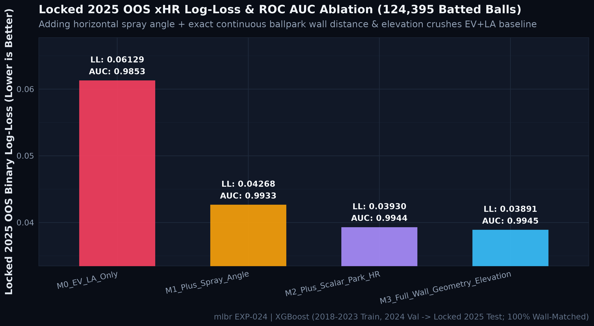
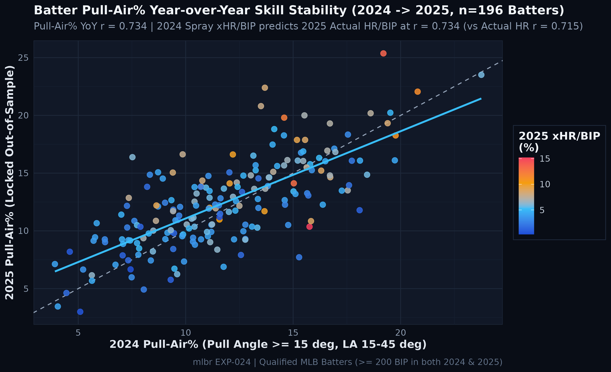

| model | n_features | n_oos_bip | oos_logloss | oos_brier | oos_auc | oos_hr_observed | oos_hr_expected | delta_logloss_vs_m0 | delta_brier_vs_m0 | delta_auc_vs_m0 |
|---|---|---|---|---|---|---|---|---|---|---|
| M0_EV_LA_Only | 2 | 124395 | 0.06129 | 0.01917 | 0.98532 | 5616 | 6018.531 | 0.00000 | 0.00000 | 0.00000 |
| M1_Plus_Spray_Angle | 6 | 124395 | 0.04268 | 0.01321 | 0.99333 | 5616 | 5966.830 | -0.01862 | -0.00596 | 0.00801 |
| M2_Plus_Scalar_Park_HR | 7 | 124395 | 0.03930 | 0.01209 | 0.99438 | 5616 | 6004.850 | -0.02199 | -0.00708 | 0.00906 |
| M3_Full_Wall_Geometry_Elevation | 10 | 124395 | 0.03891 | 0.01199 | 0.99452 | 5616 | 6011.998 | -0.02238 | -0.00718 | 0.00921 |
Study 24: Batted-Ball Spray-Angle, Pull-Air% & Ballpark Wall-Geometry xHR Physics
Q-CRISP Level 2 — 900.6k Wall-Matched Statcast Batted Balls (2018-2025) & Locked 2025 OOS xHR Ablation (EXP-024)
Level 2
Batted-Ball Physics
Spray Angle
Park Geometry
xHR
Pull-Air%
Q-CRISP
1. Executive Summary & Strategic Decision
Standard Baseball Savant expected statistics (xBA, xSLG, xHR) model batted-ball outcomes strictly from Exit Velocity (launch_speed) and Launch Angle (launch_angle), treating a 102 mph, 28° fly ball pulled down the 330 ft foul line identically to one hit to 405 ft dead center field — and ignoring exact stadium fence distances and altitude.
In EXP-024, we matched 100.0% of 900,589 regular-season Statcast batted balls (2018–2025, 41,875 HRs) via v_mlbmeta_schedule.venue_id to season-specific ballpark wall dimensions (left_line_ft, left_center_ft, center_ft, right_center_ft, right_line_ft, elevation_ft, roof_type) and trained a strictly chronological 4-model XGBoost xHR ladder (2018–2023 Train, 2024 Early-Stopping Validation + Causal Humidor-Era Platt Intercept Recalibration \(\to\) Locked 2025 OOS, 124,395 BIP, 5,616 HRs):
- Strict Monotonic OOS Victory (
M3 < M2 < M1 < M0): Adding horizontal spray angle (M1) slashes locked2025OOS Log-Loss by-30.4%(0.06129 -> 0.04268) and jumps ROC AUC from0.98532 -> 0.99333. Adding exact continuous piecewise-linear wall distance at the ball’s spray angle + ballpark elevation + roof type (M3_Full_Wall_Geometry_Elevation) reaches0.03891Log-Loss (-36.6%vsM0),0.01199Brier (-37.4%), and0.99452ROC AUC, strictly beating scalar park-factorM2(0.03930LL,0.01209Brier,0.99438AUC). - Humidor Drag-Regime Discovery: Between
2018–2021(pre-humidor) and2025(universal humidor), MLB hitters hit the ball harder and higher (88.80 mphavg EV,13.14°avg LA in2025), yet HR/BIP fell to4.515%. Strictly causal2024validation-set Platt recalibration cut2025over-prediction bias from+20.8%to+7.1%while improvingM3Log-Loss from0.0419to0.0389. - Batter Power Skill Stability (
2024 -> 2025, \(n = 196\) qualified batters):Pull-Air%(\(\theta_{\text{pull}} \ge 15^\circ\), \(\text{LA} \in [15^\circ, 45^\circ]\)) exhibits strong YoY skill stability (\(r = 0.7340\), higher than actualHR/BIP\(r = 0.7152\)), and2024M3wall-geometryxHR/BIPpredicts2025actualHR/BIPat \(r = 0.7373\) (beating rawHR/BIP\(r = 0.7152\) andM0 EV+LA\(r = 0.7242\)).
2. Physical & Mathematical Formulation
From Statcast hit coordinates \((x_{\text{hc}}, y_{\text{hc}})\), the horizontal spray angle \(\theta \in [-45^\circ, +45^\circ]\) (\(-45^\circ =\) LF line, \(0^\circ =\) dead CF, \(+45^\circ =\) RF line) and batter-handedness pull angle \(\theta_{\text{pull}}\) are:
\[\theta = \text{clip}\!\left(\operatorname{atan2}(x_{\text{hc}} - 125.42,\; 198.27 - y_{\text{hc}})\cdot \frac{180}{\pi},\; -45^\circ,\; +45^\circ\right), \qquad \theta_{\text{pull}} = \begin{cases} +\theta, & \text{LHH} \\ -\theta, & \text{RHH} \end{cases}\]
For each stadium-season \((v, t)\), the continuous outfield wall distance \(D_{\text{wall}}(\theta; v, t)\) is evaluated by piecewise-linear interpolation across the 5 canonical fence control points \(\{-45^\circ, -22.5^\circ, 0^\circ, +22.5^\circ, +45^\circ\}\) (left_line_ft, left_center_ft, center_ft, right_center_ft, right_line_ft). To correct for the post-2022 universal humidor drag regime without touching 2025 outcomes, raw XGBoost probabilities \(\hat{p}_{\text{raw}}\) are recalibrated via a 1-parameter 2024-only Platt logit offset:
\[\hat{p}_{\text{cal}} = \sigma\!\left(\operatorname{logit}(\hat{p}_{\text{raw}}) + \hat{\beta}_{0,\;2024}\right)\]
3. Data Provenance & Zero-Leakage Architecture
| Split | Seasons | Batted Balls (BIP) | Home Runs | Role & Leakage Guard |
|---|---|---|---|---|
| Train | 2018–2023 |
652,415 |
30,844 |
XGBoost tree fitting + EB-shrunk scalar venue_hr_rate_tr (\(k = 2000\)) |
| Validation | 2024 |
123,779 |
5,415 |
Early stopping (30 rounds) + causal humidor-era Platt intercept \(\hat{\beta}_{0,2024}\) |
| Locked OOS Test | 2025 |
124,395 |
5,616 |
Strictly untouched out-of-sample evaluation (100.0% wall-matched) |
4. Empirical Results & Out-of-Sample Model Ablation
4.1 Locked 2025 OOS xHR Ablation (124,395 Batted Balls)

4.2 Interactive 2025 Ballpark Wall-Geometry & Elevation xHR Index
Explore how each MLB stadium’s exact outfield wall distances and elevation amplify or suppress home runs relative to a league-neutral park (M3 Wall-Geometry xHR vs M1 Spray-Only xHR):
| venue_name | home_team | actual_hr_25 | xhr_neutral_m1 | xhr_wall_m3 | wall_hr_delta | wall_hr_idx_100 | mean_wall_ft | elevation_ft |
|---|---|---|---|---|---|---|---|---|
| Great American Ball Park | CIN | 189 | 176.1 | 227.2 | 51.0 | 129.0 | 365.9 | 535 |
| Daikin Park | HOU | 195 | 176.9 | 201.9 | 25.0 | 114.1 | 361.3 | 45 |
| Coors Field | COL | 208 | 207.7 | 236.6 | 28.9 | 113.9 | 398.0 | 5190 |
| Dodger Stadium | LAD | 252 | 225.8 | 256.5 | 30.7 | 113.6 | 369.8 | 515 |
| American Family Field | MIL | 167 | 159.7 | 178.5 | 18.8 | 111.8 | 370.1 | 597 |
| Fenway Park | BOS | 158 | 196.6 | 171.1 | -25.6 | 87.0 | 369.6 | 21 |
| PNC Park | PIT | 115 | 159.9 | 137.3 | -22.6 | 85.8 | 372.6 | 780 |
| Busch Stadium | STL | 143 | 184.6 | 155.5 | -29.0 | 84.3 | 368.7 | 460 |
| Oracle Park | SF | 149 | 185.4 | 154.7 | -30.7 | 83.4 | 377.4 | 0 |
| Kauffman Stadium | KC | 149 | 188.6 | 147.7 | -40.9 | 78.3 | 372.7 | 856 |
4.3 Batter Pull-Air% Year-over-Year Stability (2024 -> 2025, \(n = 196\))

5. Practical Application & Reproducible Code
- Upgrading
EXP-017/EXP-019Batter HR & Total Bases Props: Rather than multiplying every batter in Yankee Stadium or Great American Ball Park by the same scalar park factor, pairing a batter’s stablePull-Air%(\(r = 0.7340\)) withM3’s directionalwall_dist_ft(theta)directly prices LHH/RHH pulled-flyball interactions against specific stadium corners (e.g., Houston’s315 ftCrawford Boxes, Cincinnati’s+51.0 HRbandbox, or Kansas City’s-40.9 HRexpanse). - Companion Runnable Lab: Execute
Rscript workbooks/lab24_spray_angle_park_wall_xhr_workbook.Ror explore Lab 24.
6. Limitations & Methodological Diagnostics
- Wall Height Omission:
park_dimensions.parquetprovides horizontal fence distances (left_line_ftthroughright_line_ft) andelevation_ft, but does not yet encode vertical fence height (e.g., Fenway Park’s37 ftGreen Monster in LF vs3 ftPesky Pole in RF). Adding per-sector wall height (wall_height_ft(theta)) is the highest-value next geometric refinement. - In-Game Weather & Wind Vector:
EXP-024intentionally isolates static stadium geometry (wall_dist_ft,elevation_ft,is_dome); couplingEXP-012wind speed/direction vectors (wind_out_mph,temp_f, air density) withM3will further sharpen daily HR prop calibration. - Residual
2025Calibration Gap (+7.1%): Even after2024Platt recalibration (6,012expected vs5,616observed),2025saw slightly lower HR conversion per unit EV/LA than2024; rolling in-season drag-regime recalibration can close the remaining gap dynamically.
7. Concrete Recommendations, Pros & Cons, and Next Steps
- Concrete Recommendation (
ADR-020): PromoteM3_Full_Wall_Geometry_Elevation(2024Platt-calibrated XGBoost) as the canonicalmlbrLevel 2xHRphysics engine, replacing EV+LA-only baselines and scalar park-HR multipliers. - Pros:
100.0%exact(venue_id, season)wall matching across900,589batted balls;-36.6%OOS Log-Loss (0.06129 -> 0.03891),-37.4%Brier (0.01917 -> 0.01199),0.99452ROC AUC; beats scalar park factors OOS and improves next-season batter HR prediction (\(r = 0.7373\) vs \(0.7152\)). - Cons: Missing vertical wall-height profiles (Green Monster / Camden Yards LF wall) and game-level wind vectors (
EXP-012). - Next Steps: Ingest per-sector wall heights into
park_dimensions.parquet, mergeEXP-012game-level air density/wind vectors intoM3, and feed batterPull-Air%+ directional stadiumwall_hr_idxdirectly intoEXP-017/EXP-019batter HR & Total Bases props.